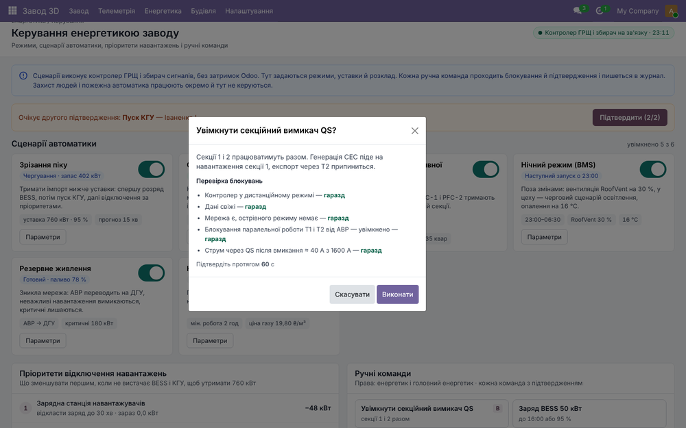

Control of power supply and energy consumption of the plant: automation scenarios, load-shedding priorities and manual commands, each with interlocks, confirmation and a journal.

Manual command with interlock check and confirmation
td_energy), Factory 3D Telemetry (td_telemetry), Building Management (td_bms).Part of the Factory 3D suite for Odoo 19. Questions and support requests: support@todo.ltd